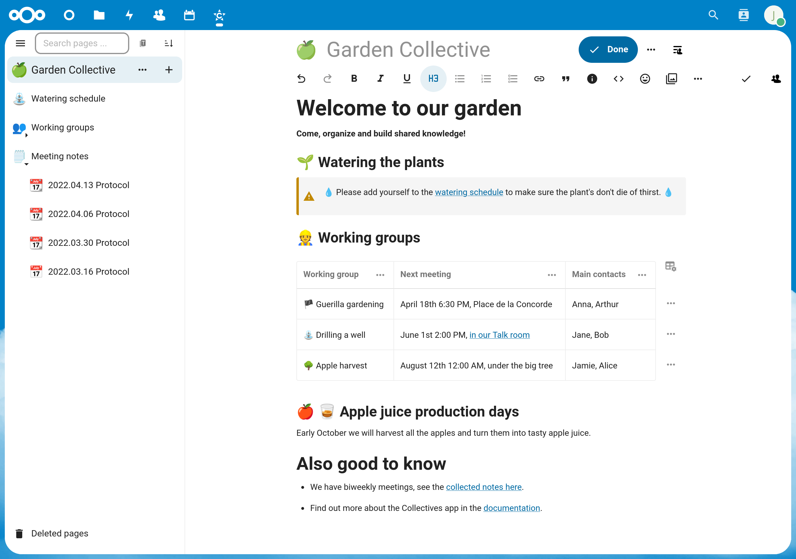
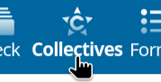

Kom godt i gang
Tænk på Collectives som jeres fælles sted til at tage noter sammen og samarbejde online. Du og dine kolleger kan skrive dokumenter sammen og strukturere jeres fælles viden. I kan endda indlejre opgavetavler, whiteboards og kalendere. Collectives lægger vægt på vandrette og ikke-hierarkiske arbejdsgange.

Hvorfor bruge Collectives?
Du har brug for et værktøj til at samarbejde eller organisere dig med andre.
Du vil have al jeres fælles viden samlet ét sted.
Du vil have et hurtigt og nemt overblik over dine sider og undersider.
Du vil dele dele af jeres viden med eksterne personer.
Du bruger allerede Nextcloud.
De første skridt
Du opretter dit første kollektiv med to sider og et link fra den ene til den anden. Vejledningen forudsætter, at du åbner Collectives i en browser på en computer (altså ikke på mobilen).
Vælg Collectives i appmenuen øverst:

Klik på »Nyt kollektiv«.
Skriv navnet
My first collective, og vælg en emoji (eller behold den, der er valgt på forhånd).Vælg »Opret uden medlemmer«. Vi lærer at tilføje andre medlemmer senere.
Klik på knappen ➕ ved landingssiden i sidelisten til venstre. Tillykke, du har lige oprettet den første side i dit kollektiv. 🎉
Giv siden en titel ved at skrive
My first page.Tryk nu på Enter, så hopper markøren ned til sidens (stadig tomme) indhold.
Skriv
## My first headingfor at indsætte en overskrift på andet niveau. Du kan også åbne menuen med overskrifter i værktøjslinjen, vælge »Overskrift 2« og derefter skriveMy first heading. Du har lige lært, at der er mere end én måde at formatere tekst på 🎉Opret en underside til »My first page« ved at klikke på knappen ➕ ved »My first page« i sidepanelet. Knappen vises først, når du holder markøren over punktet i sidelisten.
Giv undersiden en titel ved at skrive »My subpage«.
Tilføj et link til den første side ved at åbne linkmenuen 🔗 i værktøjslinjen og vælge »Link til side«. Der åbnes en dialog, hvor du vælger siden. Skriv
firsti søgefeltet, så vises »My first page«. Klik på den, så tilføjes den som en forhåndsvisning af linket på undersiden.

Tillykke, du har lært to vigtige grundprincipper i Collectives: hvordan du opretter og linker mellem sider, og hvordan du formaterer indholdet på en side.
Hvad nu?
Se Sådan får du dit team i gang for at lære, hvordan I bruger Collectives i jeres team.
Se her for at få et overblik over funktionerne.